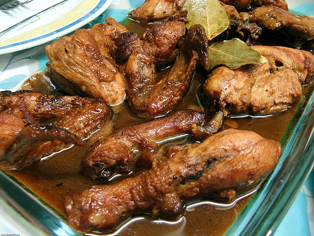

Chicken Adobo

Ingredients
- Garlic
- onion
- chicken (adobo cut)
- soy sauce
- vinegar
- bay leaves
- black pepper
- oil
- sugar
Steps
- Optional: Marinate the chicken in some soy sauce
- Sauté garlic and onions in a wok
- Fry two sides of the chicken in the Wok
- Add a little bit of water, equal parts soy sauce (or soy sauce used to marinate the chicken) and vinegar. Let it simmer to incorporate. Do not mix for 5 mins
- Add some sugar, bay leaves and black pepper. Simmer for a few minutes and mix occasionally
- Taste, and adjust accordingly
- Serve and enjoy!